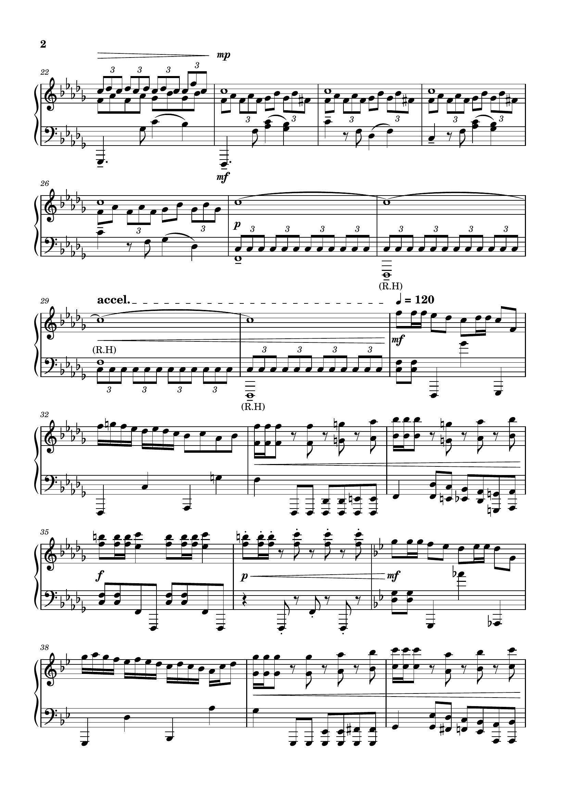

Christy Nolan "Perseverance Through Words"
Online Guide
Accessibility Options
Perseverance Through Words: A Tribute to Christy Nolan
The "Perseverance Through Words" competition celebrates Christy Nolan's legacy and empowers disabled students and staff at Trinity College Dublin to showcase their creativity. The event includes a competition launch, a midpoint workshop, and a final celebration featuring winning submissions.
A Brief Overview of Christy Nolan
Christopher Nolan (6 September 1965 - 20 February 2009), often called “Christy,” was an Irish poet and novelist who overcame the challenges of severe cerebral palsy to craft an extraordinary body of work that resonated with readers around the world. Born in Mullingar, County Westmeath, he famously used a “unicorn stick” attached to his forehead to type, demonstrating both his remarkable determination and inventive spirit. He published his first collection of poetry and prose, Dam-Burst of Dreams, as a teenager, then gained international acclaim with his autobiographical novel Under the Eye of the Clock, which won the prestigious Whitbread Award (now the Costa Book Awards). Nolan's lyrical style and distinctive perspective also shone in his later novel, The Banyan Tree, helping cement his reputation as a vital voice in Irish literature. Despite his physical limitations, Nolan's unwavering commitment to self-expression continues to inspire readers and writers alike, underscoring the resilience and boundless creativity of the human spirit.
“He was so joyous that life could be turned into words.”
Online Guide
Welcome to the Online Guide for
Christy Nolan "Perseverance Through Words" Creative Competition
& Celebration
The Competition Launched on Wednesday, 12th February 2025.
We extend our thanks to the Trinity disAbility Service, Declan Treanor (disAbility Service Director), The Long Room, School of Creative Writing, in partnership with the School of English, and all the talented artists whose extraordinary and thought-provoking work brings this vision to life.
Event & Celebration Details
Tuesday, 6th May 2025
The Old Library - The Long Room BuildingTrinity College Dublin.
Learn more about the Christy Nolan Event
Fully Accessible Event Featuring:
This event includes a range of engaging activities and accessibility features to ensure an inclusive experience.
-
Showcase: Winning and shortlisted entries on display.
-
Discussion: Exploring Christy Nolan's influence on creativity and disability representation.
-
Hosted by: The School of Creative Writing, in partnership with the School of English, the disAbility Service, and the Long Room.
-
Judging panel: There is a panel of judges including academics from the Oscar Wilde Centre and School of Creative Arts and also Christy Nolan's niece, Sunniva.
Celebrating 25 Years of Accessibility and Inclusion at Trinity College Dublin
2025 marks 25 years of empowering students, fostering inclusion, and advancing accessibility in higher education. This milestone is an opportunity to reflect on our achievements, engage our community, and set a vision for the future.

Event Information
The Christy Nolan "Perseverance Through Words" event, will take place on Tuesday, 6th May, 2025 | 6PM to 8PM, in The Long Room, Trinity College Dublin. Admission is free, and all are welcome to attend.
Click on the (down chevron) to get more information.
Declan Treanor
Declan, as the Director of the disAbility Service at Trinity College Dublin, leads efforts to make the university more inclusive and accessible for disabled students and staff. He oversees key projects, including the new Trinity disAbility Hub at Printing House Square, and works on improving student spaces, universal design, and neurodivergent support. Declan is dedicated to ensuring high-quality, modern, and integrated services while advocating for equality, diversity, and inclusion. His work helps create a welcoming environment where all students can thrive.
Read more about Declan Treanor (Opens in a new window).
Jennifer O'Connor
Jen is a Trinity disAbled Internship Programme Officer. Jen is a graduate from the University of Galway with a Bachelor of Arts in Modern Languages and Creative Writing. She has since completed a Master of Science in Disability Speech and Communication Skills which highlighted her interest in narrative studies, particularly in the context of autistic adults. After completing her MSc, Jen began advocacy work with the neurodivergent and disabled communities, whilst completing her Postgraduate Diploma in Personal and Business Coaching from University College Cork. Her interest in neurodiversity stems from her own dual diagnosis with ADHD and autism.
Read more about Jen O'Connor (Opens in a new window).
The Old Library at Trinity College Dublin is one of Ireland's most iconic cultural landmarks, housing the world-renowned Book of Kells and the magnificent Long Room.
Visiting the Old Library is a deeply sensory experience. Upon entering, the scent of old books and polished wood fills the air, evoking a sense of history and tradition. The ground floor, where the Book of Kells exhibition is housed, is often bustling with activity, creating a lively atmosphere. However, the lighting is carefully controlled to protect the manuscripts, resulting in a calm, subdued environment.
Note: The Long Room building has no student spaces.
The Old Library is accessible at all levels, ensuring that all visitors can experience its treasures. The main entrance features stone-built ramps on both the east and west sides, providing wheelchair access to the building. The double front doors offer wide access, and once inside, there is good mobility throughout the ground floor public spaces. For more information about accessibility in the Long Room you can check out the TCD Sense Map - The Old Library (opens in a new tab).
- Phone (Trinity disAbility Service): +353 1 896 3111
- Email (Trinity disAbility Service): askds@tcd.ie
- Informal queries can be made to Jen O'Connor (Disability Officer) at joconnor@tcd.ie
Overview
The "Perseverance Through Words" competition celebrates Christy Nolan's legacy and empowers disabled students and staff at Trinity College Dublin to showcase their creativity. The event includes a competition launch, a midpoint workshop, and a final celebration featuring winning submissions.
Christy Nolan (1965-2009) remains a shining example of Irish creativity and literature. At just fifteen, he published his first poetry collection, Dam-Burst of Dreams, followed by his memoir, Under the Eye of the Clock, and later the critically acclaimed novel The Banyan Tree. During his time at Trinity College Dublin, Christy's disability was welcomed and he found the support he needed to thrive. Now, in recognition of his archival works being displayed in the Long Room at Trinity and to celebrate 25 years of the disAbility Service, we invite disabled staff and students at Trinity to share their creative talents in a competition open to all art forms—literary, visual, film, and performance. The winning works will be showcased in the “Old Library, New Treasures” exhibition and honored at a special event celebrating Christy's life.
Contact & Updates
Email: Informal queries can be made to to Jen O'Connor (Disability Officer) at joconnor@tcd.ie
Submissions
Categories

Download "Perseverance Through Words" Transcript (PDF)
View "Perseverance Through Words" Transcript in HTML
List of Submissions
- Submission 1 - Aoife O'Donovan
- Submission 2 - Avantika Singhal
- Submission 3 - Aiven Arones
- Submission 4 - Anna Lopuchowycz
- Submission 5 - Annika Leistensnider
- Submission 6 - Aoife Bridges
- Submission 7 - Aránzazu Varela Muñoz
- Submission 8 - Ciaran Briscoe
- Submission 9 - Cormac Ó Fearghail
- Submission 10 - Holly Wolohan
- Submission 11 - Rhys Pearce
- Submission 12 - Rory Finlay
- Submission 13 - Olivia Tranguch
- Submission 14 - Ava Rose Beggy
- Submission 15 - Claudia Clarke Gosalvez
- Submission 16 - Sophie Eastwood
- Submission 17 - Faolán Doecke-Launders
- Submission 18 - Joanne Touhey
Submission 1 - Aoife O'Donovan
Music:
Zealous Mercurial Dreams Were About to Be Realised
"Zealous Mercurial Dreams Were About to Be Realised" is inspired by the work of Christy Nolan, the extraordinary Irish author and poet who overcame his challenges of cerebral palsy to create impactful Irish literature. His dedication to his artistic voice and the power of his words stand as a testament to the human drive to communicate and create. Growing up with dyslexia meant that I often struggled with finding the beauty and enjoyment of the written word. Instead, I discovered a relationship with music, learning through listening and feeling. Music became a language that spoke to me with a clarity, a world where my understanding flourished through sound and emotion. This piece, "Zealous Mercurial Dreams Were About to Be Realised," in its energetic bursts and fluid shifts, reflects a journey of discovery of expression. The "zealous" quality speaks to the passionate drive to create and express, while the "mercurial" nature embodies the freedom and fluidity I found in connecting with music on my own terms. Ultimately, this piece is an expression of the joy and liberation found in the expression of language. It's offered as a tribute to the spirit of Christy Nolan and a reflection of my own unique path towards the joy of language.
Description: This submission presents the musical score titled “Zealous mercurial dreams were about to be realized”, inspired by the work of Christy Nolan.
ALT Description: A musical score titled "Zealous mercurial dreams were about to be realized -inspired by the work of Christy Nolan-". Page 1 of the score featuring notated staves with abstract and symbolic markings.
ALT Description: Page 2 of the musical score with complex rhythmic patterns and graphic notation.
ALT Description: Page 3 of the musical score continuing the theme with dense musical graphics and tempo indications.
ALT Description: Page 4 of the score with more abstract notational elements and expressive markings.
ALT Description: Page 5 of the score showing continued musical complexity with stylized symbols and performance notes.
Audio Playback: Listen to the performance of Zealous Mercurial Dreams Were About to Be Realised below:
Submission 2 - Avantika Singhal
Writing:
Which quote from Christy Nolan did you use to inspire your entry?
"Now could he ever get his chance to let folk see what they thought never existed?" (p.53)
Description:
I have written a personal essay about how I got through an especially sunny day as an albino. On many occasions, the sunlight is manageable but on many, it isn't. That's what happened during a bookshop-run and I've tried to capture how I made it to my destination without bumping into a fellow human or a pole. It also captures how I am comfortable and proud telling everyone about my condition, which didn't happen overnight, but I am glad that it has eventually.
Avantika Singhal ~ Peronal Essay
Description: This submission presents a personal essay titled “Personal Essay Submission” by Avantika Singhal, reflecting on lived experiences of albinism, identity, and navigating everyday encounters in Dublin. Written in a lyrical, introspective tone, the piece captures a moment of personal vulnerability and empowerment.
"Now could he ever get his chance to let folk see what they
thought never existed?" (Christopher Nolan - Under the Eye of
the Clock p.53)
There's panic.
There's hesitation. And, there's one recurring thought - you all
are just silhouettes to me: black, mobile, and unpredictable.
I let this thought consume me as I stand in the sharp Irish
sunlight on a street somewhere in St. Stephen's Green, shielding
my eyes despite wearing sunglasses. Can I see anything clearly?
No. You all are a blur and by “you” I mean all the Dubliners
spreading in all directions, going about their day - oblivious to
a middle-aged albino girl who can't seem to see straight despite
eye protection.
This happens more than you'd expect. Usually, when I am alone, I
walk it off, praying that the sunbeams become kinder in time and
that I can make my way to my destination without being run over or
pushed down on the buzzing pavements. However, when I am walking
with someone, say a friend or family member and the Sun is
reaching unprecedented heights, my pace slows, my steps falter and
the eye-shielding is ten times more vigorous.
Today, the Sun is a little less forgiving even though I am alone.
By some miracle and a sprinkle of perseverance, I push through the
shapes and successfully make my way to Books Upstairs, an
unmistakably blue bookshop labelled as “Ireland's oldest”. The
need to be surrounded by books is all-consuming at this juncture
of time and space and it also gives me a chance to hide from the
Sun.
I enter gracelessly and my demeanour changes instantly. The
colours, the titles, the bookworms - oh so tempting! But am I here
to splurge on a trending hardcover? No. The reason why I am here
is because I am somewhat of a Hot Chocolate connoisseur and I must
test all the milky-chocolatey concoctions I can get my glove-clad
hands on.
I make my way upstairs (no book in hand, mind you) and awkwardly
order my forever-favourite beverage. The barista is a 20-something
college-going girl who couldn't stop yapping about the latest
Hunger Games book before I ordered. That was until she wasn't
riveted by my accent - which is an inauthentic and
not-so-compelling mixture of Indian and American. However, she is
invested now, and asks me without preamble, “Where are you
from?”
Here we go again. Time to explain how someone with ginger hair (I
dye it), violet, nystagmus-riddled eyes, and a pale complexion
sounds like an Indian. Where is she from?!, her brain must be
toiling to trace my roots.
I tend to cherish and detest such interactions. There have been so
many ever since I came to Dublin that I can almost predict how the
person is going to react to my origin story. Once I solve the
mystery for them, I do feel liberated; like I have just reinstated
to myself that I am comfortable in my skin.
I offer her a brief explanation gently, “India, but I am
albino.”
It's no surprise when she raises her eyebrows and opens her mouth
in an 'o' shape. Yes, yes, cue the surprise. She has finally
spotted an Indian-looking Irish young woman in the modern-day
wilderness. Huzza!
Within seconds, the shocked 'o' turns into an understanding 'o'
and she hands me my drink with a tiny smile on her face. She's
absorbing the information and trying to be polite at the same
time. I get it. I always do.
I should have never existed. Yet I do. I am the best kind of
anomaly. One that knocks you off your feet and forces you to
reconsider what you think you know about biology, considering both
my parents wear brown skins back home with pride and love.
Albinism is a hindrance sometimes. Crossing the road, reading tiny
fonts, spotting someone from afar…But it's also a gift and the
biggest gift I can give myself is the gift of self-acceptance.
I may not have superpowers but I still possess the ability
to stupefy people with my looks and my genealogy. For me, it
doesn't get better than that.
Submission 3 - Aiven Arones
Poetry:

Which quote from Christy Nolan did you use to inspire your entry?
"Accept me for what I am and I'll accept you for what you're accepted as." (p.4)
Description:
The poem is about being someones confidant but it can be interpreted in many ways. One interpretation is the secret being something malicious but being unable to say it, another is that the temptation to share a secret is a curse in itself. Regardless, the character is no fool.
I am with the TCD disability service and was diagnosed with ADHD and Aspergers
Submission 3 - Aiven Arones ~ Ne'er a Confidant
I'd ne'er thrust your trust into ash
Nor feed it to our peers
To be shared among vultures
Gnawing corpses
To be spread like a plague
Grating sores For truth is a virtue seldom known
And your secret a thing for you and I alone
I hope you know I hate you
And the penance you give so readily
Each day I seam my lips tight
But I feel it tempt me so
To speak your truth
Both kind and foul
But a confidant is a curse well known
So, I'll keep my slit tongue carefully sewn
But care you do the same my friend
For liars meet a far worse end
And if I knew what you'd say back then
I'd slit my ears to ne'er hear again
Submission 4 - Anna Lopuchowycz
Poetry:

Which quote from Christy Nolan did you use to inspire your entry?
"Words which had been lifted from the depths of numbness." (p.96);"Now could he ever get his chance to let folk see what they thought never existed?" (p.53) ;"His voice would be his written word." (p.93)
Description:
Upon hearing about the competition and learning about Christopher Nolan, I chose to read Under the Eye of the Clock in its entirety to get a better sense of who we are honoring. My piece is a 40-line poem, inspired not only by the quotes provided but by Nolan's memoir and his story as a whole. As someone with an invisible disability I can never know what it is like to have a visible disability, but I can know and understand the inner pain, fight, and isolation that comes with a disability in itself - and I can only hope that I did well in honoring Nolan and his legacy through my poem.
Submission 4 - Anna Lopuchowycz ~ Notch
Climb the spine of the tree
notch, notch, notch.
Spindly limbs crawl forward
pushing, pushing, pulse.
Brittle bones and backward ways
falsehoods spring from the lapse in that gaze
Ichor drips from sunny yolk
as sundrenched limbs creak and groan
reach forward, slink back
to bask in the weight of existing.
No known limits
yet limited nonetheless
bones grow weary as ichor slips -
down, down, drips.
Ink raises to meet the iris
lumbared body sways
exhaustion heavy through the gaze
notch, notch, notch.
Down the spine notch, notch, notch.
Ichored ink stains these hands
this proof of existence earmarked
rusting, restlessly, ruthlessly
against unwilling flesh - scrub, scrub, scream
no echo, no voice
yet you are seen.
Sundrenched ichor spots off the spine
notch, notch, notch.
Sit, spit, speak.
Voiceless caws from the tree
limbs shake and overtake
past the point of ichor drips
ink smears down the spine
notch, notch, notch.
Brittle bones slink down
to the winking pool of numbness
splotchy spots of ink drenched ichor dance
on the trembly spine
spindled and sick
notch, notch, notch.
Submission 5 - Annika Leistensnider
Poetry:

Which quote from Christy Nolan did you use to inspire your entry?
"Of science and the human heart." (Miracle Drug, U2)
Submission 5 - Annika Leistensnider ~ Extinction Level Event
When I was 7, I learned the sun would explode one day.
It hit me really hard,
as if my dad had said we would all die tomorrow.
He laughed, “5 billion years from now.
We'll both be dead.”
That's true.
I hadn't thought of that.
And at the time, I remembered evolution and dinosaurs.
I had learned more in a few years than I ever would again.
And two of the things I learned were that dinosaurs lived here 200
million years ago and that
they were awesome.
200 million was not even close to 5 billion.
I'd been around for 7.
That day was one of revelation.
My family and I were not the universe,
just one of many.
I couldn't believe that it was possible nothing from me would
definitively exist at an exact,
inescapable moment.
Sometimes I feel that way about relationships.
Sometimes I feel that way with you. That we exist in some seconds
of childlike confusion after hearing an inconceivable truth;
that a day will come when no trace of us can be found in the
other.
As I stare into my lovers' eyes each,
"There will come a day that I forget you."
Submission 6 - Aoife Bridges
Poetry:

Which quote from Christy Nolan did you use to inspire your entry?
"Zealous mercurial dreams were about to be realized." (p.151)
Description:
This piece is a reflection on a journey with depression, spanning over several years. It explores the emergence from a place of darkness, a place where the future felt unreachable, where it becomes difficult to recognise yourself, and existence itself becomes a quiet battle. It aims to articulate the almost imperceptible return to life, the long-awaited escape from mere survival. It was inspired by Christy Nolan's ability to write with such emotional clarity and resilience, I wanted to honour the achievement of surviving, and to acknowledge the beauty but also the fear of moving beyond into a life that you almost forgot existed - where mercurial dreams, once too impossible to contemplate, begin to form. 'to tomorrow, and tomorrow' is a letter to a former self and perhaps a future self, with a promise that life can, and will be, more. I hope it speaks to the experience of living with a hidden disability but also celebrates the power of creativity and self-expression to propel us forward when words and life itself feel too far away to reach, something that has undoubtedly helped me over the years.
Submission 6 - Aoife Bridges ~ to tomorrow, and tomorrow
here
a breath caught in my throat
taken aback
by it all
23 was an impossibility
no future
nor light
shrouded by a constant darkness
penetrated only by the weight
of living
at war
an attack from within
clawed hands ripping at my mind
its jagged edges
cutting through the soft flesh
of my chest
spilling
losing hope
leaking
slowly
slowly
slowly
drawing out brilliance
leaving a
sparkless
dull
shell
how long does it take for scars to heal
i cannot give you an exact
timeline
i wish i could tell you
by day 912
that
wounds will begin to repair
muscles will knit together
skin will reach across and embrace
connected once again
the drip will slow
and inevitably stop
i cannot tell you this
but
there will be a day
when you will realise
that there are emotions on the fringes
at the edge of the abyss
tentatively creeping
toward your mind
your heart
they will slowly pry open
doors you thought
were long bolted shut
and the darkness
will not be so black
it will slowly transform
bursting with purples
blue and green
hues that have been forgotten
breaking across your minds eye
as beautiful as a dawn
a world will open before you
misshapen and blunt
and it will be yours
all yours
there will be music to feel
views to drink in
stories to tell
and questions to ask
laughs that will give you pains, such pleasant pains
tears that will feel like a blessing
love to offer
and love to accept
albeit a hesitating hand
but you are so deserving of it
so deserving
you always have been
always
your days will extend
you will finally see beyond the night
to tomorrow and tomorrow and the next day
maybe a future will begin to unfold
mercurial dreams
shaky and uncertain
flickering, ever-changing
perhaps fantastical
and zealous
but undoubtedly
there
i cannot tell you when
why
or how
but i can guarantee
that it is there
waiting for you
it will not be the life you dream of
it is beyond comprehension
beyond the words
i can write.
wait
please
wait
you will see
the present will no longer be there to survive
but to live
these ideas
thoughts and fantasies
forming slowly
are yours to seize
there is far too much to find
to experience
the crisp air in the morning
the noon sunshine will heat
you from the inside out
and you will feel it
all of it
Submission 7 - Aránzazu Varela Muñoz
Poetry:

Which quote from Christy Nolan did you use to inspire your entry?
"Accept me for what I am and I'll accept you for what you're accepted as." (p.4) ;"Words which had been lifted from the depths of numbness." (p.96)
Description:
This poem was inspired by the experience of being hospitalized at a very young age. Christy Nolan's quotes made me reflect about the fights and the difficulties we face everyday to make ourselves and others understand the pain we may experience. It also sees suffering as a powerful source of inspiration, rather than a limitation.
Submission 7 - Aránzazu Varela Muñoz ~ Everyday defiance
One day I woke up
on a misty sun in winter
the sun was burning,
the sun was healing,
like the truth told in a poem.
One day I woke up,
on a white meadow of thorny hopes.
And I saw the pain,
playing around with my future.
Falling leaves in a quiet autumn,
I felt the sterile words
swim in a stream of sorrow.
In a white room, all in white colour;
an angel called
and I asked,
what if there's no tomorrow?
On a white gown, down where red flowers follow.
Should I give up this fight
which life gives to the uncommon?
Try to leave all behind,
try to forgive the hollow.
I am here,
I survived.
Believe me or try
to judge the life
I everyday defy.
Submission 8 - Ciaran Briscoe
Poetry:

Which quote from Christy Nolan did you use to inspire your entry?
"Words which had been lifted from the depths of numbness." (p.96)
Submission 8 - Ciaran Briscoe
“Take your time, but move quick. The heroes of our generation”.
Those who knew had to keep shut.
Words which had been lifted from the depths of numbness.
Words to inspire hope, said by the hopeless.
There were those who knew, who decided not to.
A city with the most powerful words ever said, yet no one left to
hear them echoing throughout.
A picture paints a thousand words.
In this instance, the words paint a thousand pictures.
1986, Chernobyl Nuclear Disaster.
Submission 9 - Cormac Ó Fearghail
Poetry:

Description:
The poem is effectively about how I am not special. It's kind of angry, because as much as I'd like to think I'm unique, I'm just another straight, upper-middle class white guy, and really, I just do the same things as a million people before me.
Submission 9 - Cormac Ó Fearghail ~ End
End
I think I died one day.
Yes, simple as that,
My fine, fierce body and beating heart just
Gave up. They had had enough.
No time to waste!
I think I went to heaven.
I met an old man there
Called Lucifer.
He was a horrible thing to look at.
Decrepit and decayed,
When he smiled
His rotten gums held no teeth.
I gave a polite nod,
Hoping he would leave,
But he lingered and said in a dry voice,
“I know you, young sir.”
Doddery fool!
I would tell him who I was.
I spoke of my triumphs
And brilliant skills.
“Knew me?” Doddery fool! I was unique.
Better than the rest.
But he smiled,
And his black maw widened.
He listened patiently, then rose
And bade me follow.
So I did, and he led me to a stair
That went forever,
And bade me look.
In arrogance, I did so.
That was when I saw a
Most appalling sight.
Bodies. Thousands of dead, crumbling bodies.
Floating in the void.
Blank and broken,
And they all shared my face.
Now I saw the old man
His smile a black wound
Stretching impossibly wide,
And he whispered to me,
“Your life has been lived
Long before you were born.
And will be lived again
Long after you are gone.”
I cringed in terror as the
Infinite abyss
Of Lucifer's laughing maw
Became my world.
And then, nothing.
My life is lived. It will be lived again.
Submission 10 - Holly Wolohan
Poetry:

Which quote from Christy Nolan did you use to inspire your entry?
"His voice would be his written word." (p.93)
Description:
Christy Nolan was noted as not just a writer but a creator of words or portmanteau. This brought to mind the idea of a piano in a picture, art creating art, creating art, in a still silent echo.
Thank you for the opportunity to apply and I look forward to the exhibition to come.
Submission 10 - Holly Wolohan ~ Private Piano Portmanteau
"His voice would be his written word." (p.93)
My mother received a painting on her
wedding day, another, back-straight at a piano
Casting a shadow on the duties to her side;
The dog, the unwashed floor, a baby looking
at the world through new-soft lashes
Her fingers set on the keys in firm submission.
No music fills my room of daily duty, but I
am unfailingly captured by the voices, line
by line by half-spun line.
Life, line, life, another / Life, line, life, another
Reminiscent of the painting hung by my mother.
These voices are the key to my survival.
- Holly Wolohan
Submission 11 - Rhys Pearce
Poetry:

Which quote from Christy Nolan did you use to inspire your entry?
"Everyone's confidant but nobody's fool." (p.154)
Submission 11 - Rhys Pearce ~ Disorder: A Social Model
In memory of Asperger's syndrome
Tell me doctor, do you think it proven
that I bode some strange eruption to myself?
Should I take it as a given that I'm broken
and need some puzzle piece beyond my flesh?
But the only puzzling out here is in your work:
slotting the disordered back in place.
Do you ever stop and wonder what you're doing?
Do you think that you can win the human race?
From what standard do you troubleshoot?
How can you draw a starting line?
And claim the highest definition, well
in that case I'll define
the terms of my condition, now rewritten at the source:
if my 'disorder' stems from anywhere, it trickles down, of
course!
And tell me DSM-5, was it not you who
once labelled purer love as mere disorder?
Your attempt to “solve” me might be well-spent
considering why you label me “dysphoria”.
or why you label anything at all -
I think you're haunted by a spectre
that cannot cure but classifies the ailments'
as if they were the hubris you've collected.
but this taxonomy is taxing me
and takes reality to task:
for its these self-fulfilling prophecies
that turn 'ability' to rank.
So, if we really heard how Autism Speaks,
I've a hunch that it might say:
“well of course I'm overwhelmed,
the world's in disarray!”
Submission 12 - Rory Finlay
Poetry:

Which quote from Christy Nolan did you use to inspire your entry?
"Now could he ever get his chance to let folk see what they thought never existed?" (p.53)
Description:
This video is a poem I created about discovering I had ADHD at 18 years old. It reflects how I've always dreamt big but struggled to follow through with tasks, and how, once diagnosed, it helped me accept myself and experience an awakening. I shot the footage on my GoPro, and the accompanying song is 'Breathtaker' by SYML. This journey I went on mirrors Christy Nolan's sentiment: 'Now could he ever get his chance to let folk see what they thought never existed?' (p.53), as I began to unveil a part of myself previously hidden.
Submission 12 - Rory Finlay ~ An Awakening
ALT Description: A video featuring the artist reading their poem entitled "An Awakening".
An Awakening
I spent my life just wondering why
Lost in thought as time flew by
Forgot the task
But not the dream
Always drifting in between
You should focus just sit still
But my mind had its own will
Scattered thoughts
A restless spark
A hidden fire in the dark
Then one day and name a key
You're not broken
Just wired differently
Now, I know
Now, I see
ADHD is part of me
This video shows the artist reading their poem entitled "An Awakening". It has music and spoken content. The accompanying song in the video is 'Breathtaker by SYML'.
Submission 13 - Olivia Tranguch
Writing:
Which quote from Christy Nolan did you use to inspire your entry?
"His voice would be his written word." (p.93) ;"Beauty of secret knowledge so secretly hidden and so nearly lost forever." (p.56)
Submission 13 - Olivia Tranguch ~ Disposal of Cattle
He was buried with a watch that still ticks.
His wife knew their son was in vain, often. And she remembered how they walked, herding the cattle, and how her son came home with secrets. His secrets were his own and they would take up space in his heart. She thought of the day they walked and she watched. How beautiful and violent! The man whom she shared her child with, the child who was half of her and half of him, beat their son with a handful of flowers. How soft and angry! How her son walked on with grace in his step. But how she could hear the quiet sounds he made at night when darkness was a friend. But now that the dead were fallen, and had no chance to rise up, those quiet sounds grew into forests where thousands of birds squawked and flapped their wings in rivers where women had drowned.
How she'd say to her husband, 'You know, he is a hill of emotion, bursting to come off that hill. You must let him live. You must let him breathe without fear of his own breath.' Now she was saying to him, 'Can you breathe down there in your grave we dug by hand?'
He shouts at her through layers of dirt, 'I wasn't ready to go. I couldn't be as I wished. Will you bring me back up? Will you just take your shovel, and let me out. You put me in here with that son of ours, now will you just come together to lift me out. I'm not that heavy, really, I've only been eating sweets for the last year. I've already lost some tissue and skin, it won't be too difficult to just lift me out. I'll come back and repair all that we lost, or all that we never had. We can start again.'
And his son was reincarnation of a cow. And all through his father's death, the son felt, 'I am the cow and my father is the crow picking at my back… the flies picking at my eyes and cow coat of skin.'
'I never laid a finger on you, but I think today may be your day, boy!' The dead man's son starts remembering all the past memories of violence and strife. His father looks down at his watch in the grave.
His son sits above his father for the first time. 'It's time for me to come out, now, son.' But his back was turned to his son in his grave and his son couldn't hear him. But in that same moment, the son looks down at his watch, which shows the same time, and thinks, 'It was time. Time for you. Time for me. Now it is time for me to let go of these past memories. It's time for me to live. I've buried with you all those times of violence and strife, and it quietly ticks in this cow's heart.'
His son licks envelopes that hold thanks inside for the people wishing condolences upon them. He enjoys licking the envelopes to better the smell on his breath which holds tastes of death, the taste of dirt, the taste of his father.
The taste of vomit from all the food of reunion. A supper that lasted so long it was meant to keep secrets buried, to keep the food down. But as soon as the dead man's house, which he no longer inhabited, was empty, mother and son reunited alone, his son vomits up all their past.
'Your father… your father, he'd cover himself up in silence. You'd cover yourself up in words. You'd be waiting for him to be different. Some people though, some people stay the same forever, and are content. Some people like it that way. You'll always be waiting, son. Even now that he's in the grave, you'll be waiting for your mind to fix a different memory of him.'' A mother comforts her child and holds him in her arms, like the pietá.
He could feel the bodies walking above him. And all his silence wanted to burst from inside him. His son was the only one who thought, 'Will the dead mind us standing on them like this, like the way we do, and have always done?'' A father rests in his grave, wrought with a grave grief for the life he lived, and the lives he created for his wife and child.
'Our boy, my boy whose friends were moaning seals. Good man, my son. My son who dug his father's grave. Who once dug a grave for a big, old cow and laid him to rest with gentleness. We do be getting violent with each other and I'd make him dig up a past his eyes should never see. Now I have the words to say, 'I'm sorry. I'm sorry for all that past. Our past. I'm sorry for those times of violence and strife.' But now, now, he cannot hear me.'
In his grave, on this hill, his eyes let out emotion, and water the dirt with his tears. He looks down at his watch, in his grave. And the ticking stops.
The son's watch kept ticking. And the voices of his father stopped. Relief. The boy's familiarity with burying cows and a man formed him and his life. He buries the dead until his end.
He knows he's burying secrets. But he doesn't know what they are. He is content with this unknowing but decides to fix a memory of each life of each corpse in his mind. He holds all these stories close to his heart. Especially those who came alone, or left alone, like himself. He made sure to remember every corpse in every plot, marking his heart with words of them.
These secrets sit in the dark and water the dirt with their tears, or their joy.
His mother's body was the only body he refused to bury. Because he could not accept her death. He struggled to vomit up the idea of her gone. All that was left of him and his life were the cattle and the bodies beneath the earth he walked on. He tried to recall every word of his mother, but could not.
All his life he worked alone, until he could no longer work at all. All the cattle were either sold or buried. And his father's house, desolate, was bought up along with all the land, by the city council. He was now stuck in a care home, that was paid for by every plot he dug.
And then there was herself. She worked in the older folks care home, even though she herself was an older folk and as old as the rest of them. She seemed to outlive all the older folks. Skin grew around her wounds both external and internal, like a cowhide. So she too had been familiar with death. They were both seen as nobility by the people in the town. They both believed their work to be good and decent work since they did not feel they ever destroyed anything. But there was her, always giving him expired supplements that had lost their potency and integrity. In his passing hour, there she was, sitting beside him and could hear sounds of a distant seal moan.
There he goes, goes, sitting expired.
Somehow, the ground would not break initially for his death. He was not ready to meet his father again, or his mother. He was laid to rest with a shovel. The same shovel he used to dig for the cow, his father, and every subsequent grave. One could say he'd dig eternally.
He lies beside his father and mother with a watch that still ticked. And one day it stop. And with him, in his chamber, in a grave dug by hand, were all those secrets nearly lost, now lost.
Submission 14 - Ava Rose Beggy
Visual Art:

Which quote from Christy Nolan did you use to inspire your entry?
"Zealous mercurial dreams were about to be realized." (p.151)
Description:
I submitted an original oil painting of mine. This piece relates to the quotation 'Zealous mercurial dreams were about to be realized.'. This piece represents the excitement and unpredictability of dreams about to be realised. The red underpainting was chosen to symbolise the passion and intensity of the dreams. It creates a warm but theatrical composition. The bending road represents the unpredictable and changing nature of the dreams, why is the road bending and where does it lead to? The smaller three paths present in the composition represent the notion of choice, which path will be chosen and where will it take you. This reinforces the notion of change. The backward sign symbolises the unconventional route to success. The sign which is supposed to provide direction is facing the wrong way, this suggests that following traditional paths might not lead you to the realisation of your dreams. The sign signifies the idea that sometimes in order for your big dreams to come true you must follow your own intuition and ignore external expectations. The painting also captures a certain volatility that is most prominent in the sky itself. The tension is signified by the stormy sky and dark clouds. The moment of realisation is captured by the state of the sky. Initially we see a tumultuous sky however when you look closer you notice the two white spots either side of the piece. The white spots signify a hopefulness, a shift in mood and a change that is about to occur. The storm is passing, the clouds are clearing and the dreams are about to be realised.
Submission 14 - Ava Rose Beggy
ALT Description: A winding road curves through a rural landscape under a moody, overcast sky with trees lining the horizon.

Submission 15 - Claudia Clarke Gosalvez
Visual Art:

Which quote from Christy Nolan did you use to inspire your entry?
"Of science and the human heart." (Miracle Drug, U2)
Description:
Deep into my medical exams, I realized that I had been so caught up in memorizing science, facts, anatomy, that I lost track of what really mattered: trying every day to help someone heal. My piece was a reminder to myself that understanding a heart is meaningless if you don't acknowledge and love the human around it.
(Charcoal drawing, with gold tinfoil)
Submission 15 - Claudia Clarke Gosalvez ~ Hearts
ALT Description: A circular artwork split in two, showing a screaming face on one side and an anatomical heart on the other, with gold leaf accents.

Submission 16 - Sophie Eastwood
Visual Art:

Which quote from Christy Nolan did you use to inspire your entry?
"Accept me for what I am, and I'll accept you for what you're accepted as." (p.4) ;"Everyone's confidant but nobody's fool." (p.154);"His women saviours." (p.56)
Submission 16 - Sophie Eastwood
ALT Description: Black and white photo of a bronze statue of Juliet from Shakespeare's Romeo and Juliet, surrounded by tourists. The statue is set against a textured brick wall with an arch and a plaque. A person is reaching out to touch the statue's chest, a common gesture associated with the site.

Submission 17 - Faolán Doecke-Launders
Poetry:

Which quote from Christy Nolan did you use to inspire your entry?
"Now could he ever get his chance to let folk see what they thought never existed?" (p.53)
Submission 17 - Faolán Doecke-Launders ~ Raindrops
Written: April 2025
Author: Faolán Doecke-Launders
Raindrops
Only do we give the world its meaning,
Yet, we are merely a raindrop in the world,
It has no care for our meanings,
Yet, without us, there is nothing.
And so we exist to exist,
The world ends once we do,
Yet we have no power over it,
And we never will.
Without each other, there is no world.
The world merely exists.
So when you raised your sword to them,
Do you see only two paths?
Anger and eternal solitude.
Yet, did you even try?
The moment they drew their swords,
You merely answered with your own.
And what will it cost you?
With all the power in the world
I cannot even prevent a wave
from crashing into the shore.
Yet I can choose to try
For without you, like this world,
I am nothing-
I merely exist.
Paths on a beach often wash away,
As should your worry for where they lead,
Will your sword remain raised?
Or will you walk along the beach,
And feel the rushing waves at your feet.
Submission 18 - Joanne Touhey
Writing:
Which quote from Christy Nolan did you use to inspire your entry?
"Now could he ever get his chance to let folk see what they thought never existed?" (p.53)
"Beauty of secret knowledge so secretly hidden and so nearly lost forever." (p.56)
Description:
These two quotes reflect the emotional heart of my piece. It's about uncovering a hidden part of myself and confronting how family, shame, and silence have kept it buried. The work is both a personal act of reclamation and a challenge to perceptions—my own and others.
Submission 18 - Joanne Touhey ~ Hidden Heritage
Hidden Heritage
I was fourteen when I stumbled upon a hidden part of my identity. As I hopped onto the bus for school, I noticed someone walking from the back and taking the empty seat in front of me. He didn't sit; he knelt on the seat, threw his arms over the back, and looked at me. He asked who my mother was, and when I told him, he replied that my grandfather was his uncle. I didn't know what to say. Why hadn't my mother mentioned we had relations in Roscommon? The boy looked familiar, but I was sure I'd never met him before. Two girls behind me giggled and whispered “tinker,” a word I didn't understand; I didn't think it was directed at me or the boy.
The boy continued, saying we were second cousins. I was speechless, unsure of how to respond. When the bus stopped, he smirked and hopped off. The two girls looked me up and down with a dirty look. I didn't understand why, but I thought it might have been because of the boy. In school, I considered asking my friend if she knew him, but without a name, it seemed impossible. After the girls' reaction, I was reluctant to find out, in case it made things worse.
At lunch, while walking to the shop with my friend, I saw the boy outside. I quickly avoided eye contact, hoping he hadn't seen me. But when I left the shop, he called me by name. I pretended not to hear him and kept walking. My friend asked how I knew him, and I told her he was just some guy from the bus, not mentioning what he had said. Her response shocked me. “If he weren't a Traveller, he'd be good-looking. Wouldn't put him on my shift list though.”
Until that moment, I thought a Traveller was just someone who travelled from place to place. But I quickly realised there was another kind of Traveller—one that people avoided and badmouthed. I asked my friend his name and what exactly a Traveller was. She said, “He's McDonagh. Travellers live in caravans or on the side of the road, but they're nothing but trouble. Always fighting.”
I was confused. How could this boy be related to me if he were a Traveller? Does that mean the surname McDonagh is a Traveller name? Alarm bells went off. My mother's maiden name was McDonagh—the same as my birth certificate. My mother had registered me at school under my dad's surname because she said it'd make things easier. Was she ashamed of McDonagh because it was a Traveller surname, or was it just a coincidence?
I always knew McDonagh was her dad's surname, but she had little to do with him after he left for England when she was four. When he returned, she saw him a few times and introduced me to him as his first granddaughter. I remember one visit when I was four, we went to a caravan park. I thought it was a camping site and was fascinated that people could live in caravans year-round. I remember an old lady sitting in an armchair outside. (That woman turned out to be my great-grandmother.) My grandfather died when I was six, and after that, my mother had little contact with his side of the family. I don't recall anyone ever mentioning that he was a Traveller.
By the end of the school day, I'd more questions than answers. I asked my mother if McDonaghs were Travellers. She laughed it off first, eventually admitting it. I didn't know how to take it. My heart drummed hard, and my world felt like it was turning upside down. How had I not known about our heritage? Why had my family hidden it?
At the time, my mother warned me not to tell anyone, explaining that Travellers were often mistreated. I spent the night wondering how different my life might have been if my mother had stayed close to her father's family. Would I have been treated differently if people knew? I was always picked on in school, so I sympathised with others who were isolated or bullied. I thought about Patrick, a boy in my class who people called “a smelly knacker”—a term I now understood was aimed at Travellers. He often sat alone, but one day, I sat beside him, and someone across the room commented about him being “too stupid,” and to cover my work, or he'd copy it. I ignored it and sat beside him anyway, and he did look at my copy for English. I let him because Maths was my weak subject, and he'd help me with that. I was glad I didn't know he was a Traveller because I might have felt sorry for him for that reason alone, but in the end, I just saw him as someone who was struggling academically, like I was.
It took me years to process what I had learned about my heritage. During my Master's, I realised I'd been living in denial, ashamed of my surname. At eighteen, I even changed it by deed poll to my stepfather's surname, but it never felt quite right. When I started my PhD, my student card arrived with my birth surname printed on it, and it sent me into a panic. But then, I embraced it, feeling a sense of pride in an academic environment.
Eventually, when I decided to focus my thesis on Travellers and my family's history, it became a pivotal moment—a decision to stop hiding from my heritage. This led me to a deeper understanding of my roots, my family's story, and who I really am. I began to realise I shared more with my grandfather—a man I met only a handful of times—than I did with my parents. He had a determination in him that I inherited, having taught himself to read and write in the 1960s, a time of widespread prejudice against the Traveller community.